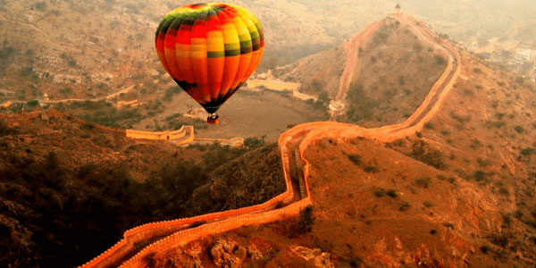
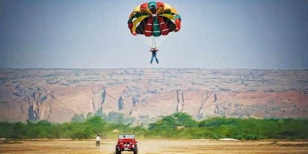
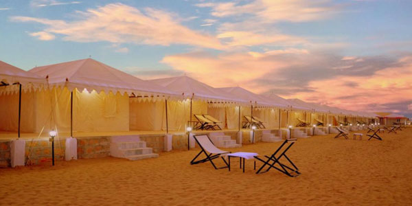

1. Hot Air Balloon Rides:
Imagine you are floating in the sky at several hundred feet above and the view of the world beneath you is just wonderful. Adding to this just think of the view this ride will offer during sunrise and sunset. Many people think of Turkey as one of the best option Hot Air Balloon ride but why travel so far for this when you can experience it on your Rajasthan tour. This ride is not only adventurous but romantic also. Hot Air Balloon Safari was launched in Jaipur in the year 2008 which is also the hotspot for air ballooning in Rajasthan and it has different types of packages. It can be taken when the weather is good with light wind, no rain or lightning in the area. Flying over the palaces, deserts, lakes, and forts is a truly mesmerizing experience and is one of its kind. Depending on the month and season, ride timings are decided but during summer rides before sunset are closed as it gets very hot in Rajasthan. Costing starts from INR 8000 per person onwards depending on how many people are on board but it will be truly worth the experience.
2. Parasailing:
Parasailing is one good option to get rid of the fear of height. Sam and Sand Dunes in Jaisalmer is the perfect place for Parasailing due to open desert land. Paragliding and Parasailing are almost similar with only one difference that Paragliding is done at hilly areas where the launch is perfect, while Parasailing is at the open ground with a parachute tied to a jeep. Many people do this activity at Jaisalmer Sam Sand Dunes which lasts for around 15 minutes each ride. Some organizers offer this activity in Jaisalmer, Jaipur, Pushkar, and Mount Abu so you get the view of the golden desert, colorful cities and huge forts and hills which is the beauty of Parasailing in Rajasthan.
3. Camping:
The state is known for royalty and offers extraordinary range of Rajasthani hotels and resorts. But imagine your stay in a tent in the desert area under the sky full of stars with the little breeze flowing. Camping in Rajasthan is unique and a must experience activity on Rajasthan tour package. You can enjoy local food along with folk songs and dances performed by the local people and you can join them in dancing as well. Camping in Jaisalmer, Bikaner, and Pushkar are the most popular ones where even plenty of foreigners come and experience. Normal tents with fan and AC Cottages are available and the rates depend on accommodation type and season of travel. This rate includes camel safari, breakfast, dinner and musical program. The best time for camping is between October to March as the weather is pleasant and the sky will be clear.
